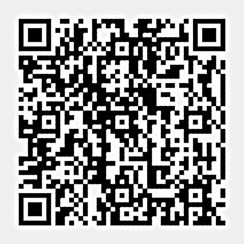

Projeto UniLaSalle — RJ
O +FOCO foi idealizado e realizado por Enzo Carvalho Martins e Felipe Mitraud Kraft da Universidade UniLaSalle com o objetivo de conscientizar sobre o uso excessivo de telas.
Através de recursos como monitoramento em tempo real e metas personalizáveis, buscamos promover a saúde digital de forma prática e intuitiva.
Nosso app pode te auxiliar caso voce enfrente déficits cognitivos, distúrbios do sono, problemas visuais, ansiedade, estresse ou depressão. Sempre recomendamos buscar um profissional de saude.
O Impacto das Telas
Uma pesquisa de 2023 do Jornal da USP apontou que a população brasileira passa, em média, 56,6% do dia (cerca de 9 horas) em frente as telas, relatando maior frequência de sintomas de transtornos.
Mais Sintomas do Excesso de Telas
Agradecimentos
Felipe Mitraud Kraft e Enzo Carvalho Martins agradecem imensamente a todas as pessoas que utilizam o +FOCO e aproveitam suas funcionalidades no dia a dia.
Agradecemos também, de coração, o apoio e auxílio dos professores e instrutores Alexandre Neves Louzada e Lauro Victor Ramos Cavadas, fundamentais para a realização deste projeto.
O +FOCO nasceu como Trabalho de Conclusão de Curso (TCC) dos alunos Enzo e Felipe, e chegar até aqui só foi possível graças a todo esse apoio. Muito obrigado! ♥